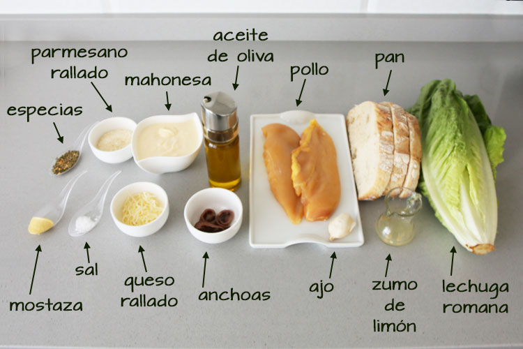
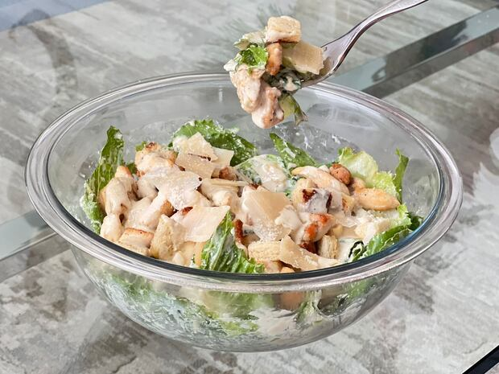

Veámos como hacerlo paso a paso

Ensalada César
Paso 1: Ingredientes
- 1 lechuga romana grande
- 100g de pollo a la plancha
- 50g de queso parmesano en lascas
- Crutones de pan tostado
- Salsa César
- 1 diente de ajo
- 2 cucharadas de aceite de oliva
- Sal y pimienta al gusto

Paso 2: Preparación
Lavamos y secamos bien la lechuga. La cortamos en trozos medianos y la colocamos en un bol grande.
En una sartén, calentamos el aceite de oliva y doramos el diente de ajo entero. Luego lo retiramos y cocinamos el pollo salpimentado hasta que esté bien dorado. Lo cortamos en tiras finas y lo agregamos a la lechuga.

Paso 3: Montaje
Añadimos los crutones, el queso parmesano y mezclamos suavemente. Agregamos la salsa César y servimos inmediatamente.